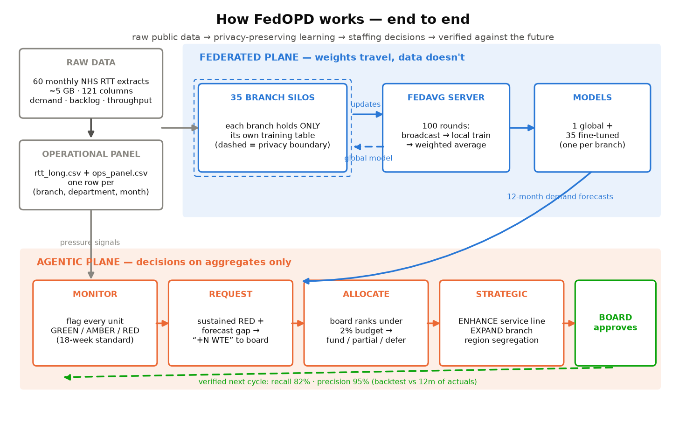
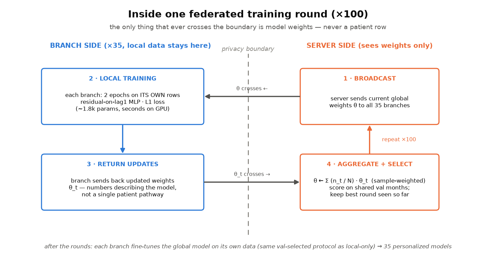
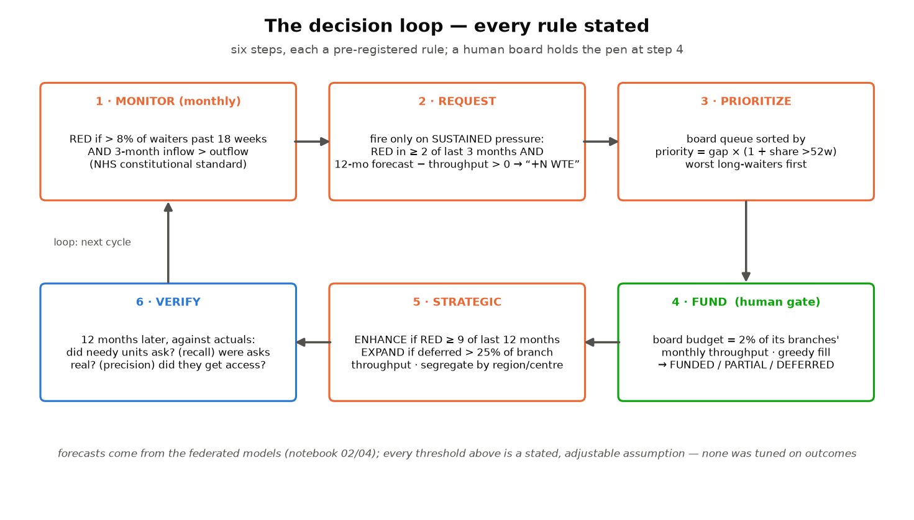
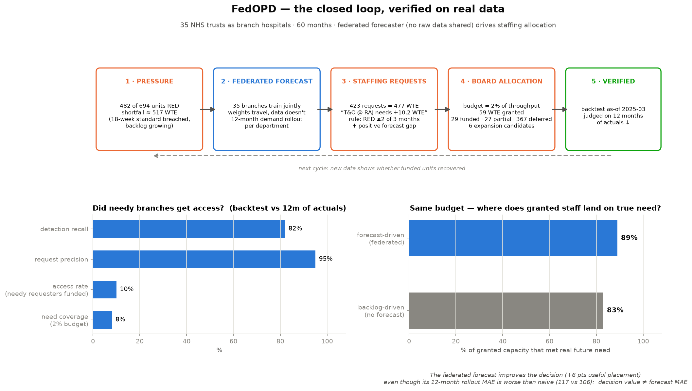

FedOPD · research prototype · 2026-07
35 NHS trusts stand in for a hospital group's branches; each trains the shared forecaster on its own data (only model weights travel), and an agentic layer turns forecasts into staffing requests, board allocations, and a verified decision loop.
All decision metrics come from a backtest: the full loop was run as-of 2025-03 and every request and grant was judged against the 12 months that actually followed.
Two planes, one strict boundary: the federated plane learns (weights travel, data doesn't); the agentic plane decides (it only ever sees forecasts and aggregates).



The loop on real data: 423 staffing requests (477 WTE) raised as-of 2026-03; boards funded 59 WTE under a 2%-of-throughput budget; 6 branches flagged as expansion candidates; 321 chronic service lines flagged for investment.

key finding With identical budgets, ranking requests by the federated forecast places 89% of granted staff on true future need vs 83% for "fund the biggest backlog" — even though the forecast's 12-month rollout MAE is worse than naive (117 vs 106). Decision value ≠ forecast MAE.
Same data, same small model (~1.8k parameters), identical val-selected protocol per rung; test = the final 12 held-out months. Single seed — the 5-seed × 8-algorithm sweep on 96 months of data is pre-registered and ready on the A100.
| rung | who trains | test MAE (per-branch) |
|---|---|---|
| local-only | each branch alone | 106.9 |
| FedAvg + fine-tune | federation, then each branch personalizes | 108.1 |
| FedAvg | all 35, weights only | 110.9 |
| naive (last month) | nobody | 111.2 |
| centralized | one pooled model (illegal in practice) | 114.2 |
| seasonal-naive (t−12) | nobody | 144.9 |
Reported as found: local-only currently leads by 1.2 MAE — inside plausible single-seed noise, and the smoke sweep reversed the ordering under constrained training budgets. The powered sweep decides it; both outcomes are publishable.